Vecteur, deuxième partie
Table of Contents
1. Coordonnées d’un vecteur dans un repère orthonormé
1.1. Définitions
1.1.1. Repère dans le plan
Pour se repérer sur le plan, on a besoin de se mettre d’accord sur :
- Un point de référence
- Une échelle horizontale, et verticale
Donc un repère va être constitué d’un point de référence que l’on va appeler l’origine, et de deux vecteurs qui indiquent les directions que l’on considère «verticale» et «horizontale».
On appelle \((A, \vec{u}, \vec{v})\) un repère du plan si \(A\) est un point du plan, et que les vecteurs \(\vec{u}\), et \(\vec{v}\) n’ont pas la même direction.
Voici un exemple de repère dans le plan.
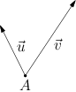
1.1.2. Repère orthonormé dans le plan
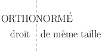
Un repère est dit orthonormé lorsque les vecteurs du repères sont :
- De même norme (souvent de norme égale à \(1\) ).
- De direction perpendiculaire
La quasi-totalité des repères des exercices sont orthormés, car cela permet une lecture des coordonnées plus simple, ainsi que des calculs de normes plus faciles.
Vous trouverez un exemple de repère orthornormé dans l’image ci-dessous.
Voici un repère orthonormé, nommé \((A, \vec{u}, \vec{v})\)
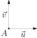
Voici un repère orthonormé, nommé \((O, \vec{i}, \vec{j})\)
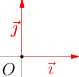
1.1.3. Convention
Très souvent, on notera \((O, \vec{i}, \vec{j})\) un repère orthonormé, le vecteur \(\vec{i}\) désignera les abscisses, et \(\vec{j}\) les ordonnées. Dans toutes les images dans ce cours, nous utiliseront le repère \((O, \vec{i}, \vec{j})\) pour donner les coordonnées des vecteurs.
1.2. Coordonnées d’un vecteur dans un repère orthonormé
Soit \(\vec{u}\) un vecteur, et on considère un repère orthonormé, \((O, \vec{i}, \vec{j})\),du plan. Alors, le vecteur \(\vec{u}\) admet des coordonnées qui le décrivent.
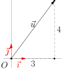
Dans l’image suivante, vous trouverez un exemple de vecteur \(\vec{u}\) qui admet pour coordonnées \((3;4)\). Ainsi, l’égalité \[ \vec{u} = (3; 4) \] désigne un vecteur qui déplace de \(3\) horizontalement, et de \(4\) verticalement.
Un vecteur peut aussi admettre des coordonnées négatives. Par exemple, dans l’image suivante, le vecteur \(\vec{v}\) admet une abscisse négative.
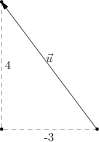
Les coordonnées nulles, c’est-à-dire \((0;0)\) désignent le vecteur nul, noté \(\vec{0}\).
1.2.1. Lorsque le vecteur est défini par deux points.
À partir de deux points, \(A\) et \(B\), on peut définir le vecteur qui «emmène» le point \(A\) vers le point \(B\), et on le note \(\overrightarrow{AB}\). À partir des coordonnées de \(A\) et de celle de \(B\), on peut en déduire les coordonnées du vecteur \(\overrightarrow{AB}\).
Si \(A\) et \(B\) admettent les coordonnées \((x_{A}, y_{A})\), \((x_{B}, y_{B})\), alors le vecteur \(\overrightarrow{AB}\) a pour coordonnées : \[ \overrightarrow{AB} = ( x_{B} - x_A ; y_B - y_A ) \]
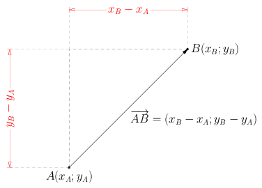
Si \(A(3;4)\) et \(B(-2;-3)\) alors le vecteur \(\overrightarrow{AB}\) a pour coordonnées \[ \overrightarrow{AB} = ( -2 - 3 ; -3 - 4 ) = (-5; -7) \] Donc pour se rendre de \(A\) vers \(B\), il faut se déplacer de \(5\) horizontalement (vers la gauche, puisque la première coordonnée de \(\overrightarrow{AB}\) est \(-5\)), et de \(7\) verticalement (vers le bas). L’image suivante illustre cette situation.
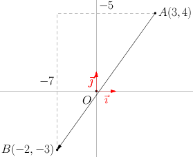
1.2.2. Somme, multiplication par un scalaire.
- Somme de vecteurs
Si on considère deux vecteurs \(\vec{u}\) et \(\vec{v}\) de coordonnée \((x;y)\) et \((w;z)\), alors si on note \(\vec{z} = \vec{u} + \vec{v}\), le vecteur \(\vec{z}\) a pour coordonnées : \[ \vec{z} = (x + w; y + z) \]
Si \(\vec{u} = (-3;4)\) et \(\vec{v} = (2; 5)\) alors \(\vec{u} + \vec{v} = (-1;9)\)
- Multiplication d’un vecteur par un scalaire
Si \(\vec{u}\) est un vecteur, alors \(2 \vec{u}\), \(3\vec{u}\), \(\sqrt{2}\vec{u}\), etc, sont aussi des vecteurs. On peut multiplier un vecteur par n’importe quel nombre réel \(k\), et on notera l’opération \(k \vec{u}\)
Soit \(\vec{u}\) un vecteur, de coordonnées \((x;y)\). Alors, le vecteur \(k \vec{u}\) a pour coordonnées \[ k \vec{u} = (k x ; k y) \]
Si \(\vec{u} = (-3; 5)\), alors \(-2 \vec{u} = (6;-10)\)
2. Application : coordonnées du milieu d’un segment
2.1. Énoncé du problème
Le problème est le suivant :
Calculer les coordonnées du point \(I\), milieu du segment \([AB]\) en connaissant les coordonnées des points \(A\) et \(B\).
Concrètement, si on considère la situation suivante:
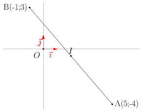
Comment calculer les coordonnées de \(I\), milieu du segment \([AB]\) ?
Sachant que :
- \(A(5; -4)\)
- \(B(-1; 3)\)
2.2. Résolution
2.2.1. Méthode longue, mais intuitive
On calcule les coordonnées du vecteur \(\overrightarrow{AB}\) : \[ \overrightarrow{AB} = (-1 - 5; 3 - (-4)) \] On trouve finalement que \(\overrightarrow{AB} = (-6; 7)\).
Maintenant, on sait que \(I\) est le milieu du segment \([AB]\). Donc on a l’égalité suivante : \[ \overrightarrow{AI} = \frac{1}{2} \overrightarrow{AB} \]
Donc, il suffit de diviser par deux les coordonnées de \(\overrightarrow{AB}\) pour trouver les coordonnées de \(\overrightarrow{AI}\). Finalement, \[ \overrightarrow{AI} = (-3;3,5) \]
Pour trouver les coordonnées de \(I\), il suffit d’appliquer le vecteur \(\overrightarrow{AI}\) au point \(A\), on trouve alors : \[ I(2;-0.5) \]
2.2.2. HOLD Méthode simple, et géométrique.
Je vous conseille cette méthode, car les calculs sont beaucoup plus courts.
Mais il faut observer la figure suivante :
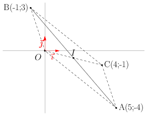
On voit que la figure \(OBCA\) est un parallélogramme ! Donc le point \(I\), milieu de \(AB\) est aussi le milieu du segment \(OC\). L’avantage, c’est que cela signifie que les coordonnées de \(I\) sont directement lisibles par les coordonnées de \(\overrightarrow{OC}\), puisque : \[ \overrightarrow{OI} = \frac{1}{2} \overrightarrow{OC} \] Et, de plus : \[ \overrightarrow{OC} = \overrightarrow{OB} + \overrightarrow{OA} \]
Donc, on peut calculer directement les coordonnées de \(I\), en calculant la moyenne des coordonnées de \(A\) et de \(B\) : \[ I \left( \frac{x_{A} + x_{B}}{2}; \frac{y_{A} + y_{B}}{2} \right) \]
3. Norme d’un vecteur, et calcul de la distance entre deux points
La norme d’un vecteur \(\overrightarrow{AB}\) représente la distance à parcourir pour emmener \(A\) vers \(B\).
À partir des coordonnées d’un vecteur, on peut calculer sa norme !
Soit \(\vec{u}\) un vecteur, de coordonnées \((x ;y)\). Alors, sa norme se calcule par \[ \lVert \vec{u} \rVert = \sqrt{x^2 + y^2} \]
Ce résultat provient du théorème de Pythagore ! Sur l’image, puisque le triangle \(OAH\) est rectangle en \(H\), d’après le théorème de Pythagore, on sait que \[ \lVert \vec{u} \rVert^{2} = \lVert \vec{OA} \rVert^{2} = OH^{2} + HA^{2} \] Ici, puisque \(\vec{u} = (4;5)\), on a \(OH = 4\) et \(HA = 5\), donc: \[ \lVert \vec{u} \rVert = \sqrt{4^{2}+5^2} = \sqrt{16+35} = \sqrt{41} \approx 6,4 \]
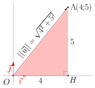